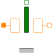

LeakageAroundPolesLeakage flux tube around cylindrical or prismatic poles |

|
Information
This information is part of the Modelica Standard Library maintained by the Modelica Association.
Please refer to the description of the enclosing sub-package Force for a description of all elements of this package.
Leakage flux around a prismatic or cylindric air gap between to poles can be described with this model. Due to its constant radius of the leakage field r, the model is rather simple. Whereas in reality the leakage radius is approximately constant for air gap lengths l greater than this radius, it decreases with air gap lengths less than the leakage radius. This decrease for small air gaps is neglected here, since the influence of the leakage flux tube compared to that of the enclosed main air gap (connected in parallel) decreases for decreasing air gap length l.
Note that in [Ka08] the equation for G_m is accidentally swapped with that of a similar element.
Parameters (5)
| useSupport |
Value: false Type: Boolean Description: = true, if support flange enabled, otherwise implicitly grounded |
|---|---|
| mu_r |
Value: Type: RelativePermeability Description: Relative magnetic permeability |
| dlBydx |
Value: 1 Type: Integer Description: Derivative of flux tube's varying dimension with respect to armature position; set to +1 or -1 |
| w |
Value: 0.1 Type: Length (m) Description: Width orthogonal to flux; mean circumference of flux tube in case of cylindrical poles |
| r |
Value: 0.01 Type: Radius (m) Description: Radius of leakage field |
Connectors (4)
| port_p |
Type: PositiveMagneticPort Description: Positive magnetic port |
|
|---|---|---|
| port_n |
Type: NegativeMagneticPort Description: Negative magnetic port |
|
| flange |
Type: Flange_b Description: Generated reluctance force at armature position |
|
| support |
Type: Support Description: Support/housing of component |
Used in Components (2)
|
Modelica.Magnetic.FluxTubes.Examples.SolenoidActuator.Components
Simple network model of a lifting magnet with planar armature end face |
|
|
Modelica.Magnetic.FluxTubes.Examples.SolenoidActuator.Components
Advanced network model of a lifting magnet with planar armature end face, split magnetomotive force |